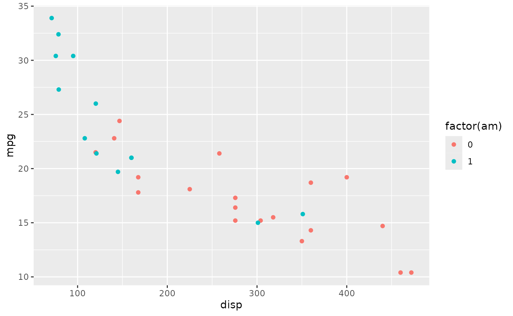

Installation
R
Install R for your operating system from the Comprehensive R Archive Network CRAN. The box at the top of the page has links for Linux, macOS, and Windows.
On Windows, see the link install R for the first time. The link will download an installer that can be double-clicked. Install as a regular user, not as a system administrator.
On macOS, use the ‘R-4.3.2-arm64.pkg’ installer for newer (M1 / M2 macOS) and ‘R-4.3.2-x86_64.pkg’ for Intel macs.
Linux systems can of course be more complicated; follow the links for your operating system.
RStudio
It is possible to use R without using RStudio (this is how I usually use R, for instance), but many people use the open-source version of RStudio. Download the open-source version of RStudio Desktop from Posit, the company that produces RStudio.
Packages
If you are installing R on your own laptop for the purposes of this course, you’ll need to install the packages that we use. R on the CCR has many packages pre-installed. But there are more than 20,000 packages in CRAN and Bioconductor, so at some point you will need a package that is not installed.
Follow this general approach. Note that packages only need to be
installed once; once installed, they can then be used in
separate R sessions using library() or the
pkg::function() notation.
CRAN package installation
Start by creating a vector of packages to install. For this workshop, we used the following packages.
pkgs <- c(
"readr", "dplyr", "tidyr", "ggplot2",
"plotly", "survival", "ggsurvfit"
)Use setdiff() (remove from the vector in the first
argument all elements that occur in the vector in the second argument)
so that only packages that are not currently installed remain.
pkgs <- setdiff(pkgs, rownames(installed.packages()))Finally, use the function install.packages() to install
the required packages from a central CRAN repository.
install.packages(pkgs, repos = "https://CRAN.R-project.org")Bioconductor packages
Bioconductor packages require a slightly different installation procedure. Make sure that you have the BiocManager package installed from CRAN
pkgs <- "BiocManager"
pkgs <- setdiff(pkgs, rownames(installed.packages()))
install.packages(pkgs, repos = "https://CRAN.R-project.org")Then install Bioconductor (and CRAN) packages as needed
pkgs <- c(
"cellxgenedp", # Bioconductor package
"Seurat" # CRAN package
)
pkgs <- setdiff(pkgs, rownames(installed.packages()))
BiocManager::install(pkgs)Updating packages
install.packages() and
BiocManager::install() report packages that are out-of-date
because a newer version is available. Usually it is a good idea to be
using the most recent version available. There are two situations when
you might wish to continue using older packages.
A tight deadline (e.g., thesis defense, paper submission). Updating packages can sometimes introduce changes that break existing code, and it can be time consuming to track these down.
-
Reproducibility. Packages sometimes introduce changes that result in (hopefully slightly) different outcomes, perhaps because the packages adopts a newer algorithm. This might not be desireable, e.g., when a paper has been submitted and the reviewer says ‘this is excellent expect …’ it requires a minor addition to the orginal analysis, but when you try and reproduce your original analysis it is no longer possible because of changes in the underlying software.
There are a number of strategies for taking a ‘snapshot’ of software versions used in a particular analysis (e.g., the renv package), and if you become serious about using R it is very valuable to explore these resources before you need to reproduce them.
FAQ: binary or source packages?
On Windows and macOS, one might sometimes see a message that indicates a ‘binary’ package is available, but the ‘source’ package is more recent. Almost always the best response is to stay with the ‘binary’ package – the more-recent ‘source’ package will likely be made available in a short time frame (within a week), and if not indicates that the package is difficult to install even by the wizards at CRAN – mortals like you and I will have to become very proficient to install Windows or macOS packages from source.
Data used in this workshop
Datasets used in this workshop are available on the CCR. They can
also be accessed on the internet. The URL for each dataset is the
base_url pasted before the file name used in this document.
Thus the ALL dataset is available at
base_url <-
"https://raw.githubusercontent.com/mtmorgan/RPG520/main/inst/extdata/"
ALL_url <- paste0(base_url, "ALL.csv")It can be read directly into R
all <- readr::read_csv(ALL_url)Or downloaded to disk for easy re-use
download.file(ALL_url, "ALL.csv")Questions arising
‘tidy’ versus ‘wide’ data
Suppose you observed tumor weight on 5 mice over 3 weeks. You could
represent this data as a tibble / data.frame
with columns ‘mouse’, ‘week’, ‘tumor_weight’.
library(dplyr)
tbl <- tibble(
mouse = rep(LETTERS[1:5], each = 3),
week = rep(1:3, times = 5),
tumor_weight = runif(15)
)
tbl
## # A tibble: 15 × 3
## mouse week tumor_weight
## <chr> <int> <dbl>
## 1 A 1 0.558
## 2 A 2 0.401
## 3 A 3 0.243
## 4 B 1 0.735
## 5 B 2 0.325
## 6 B 3 0.0925
## 7 C 1 0.263
## 8 C 2 0.304
## 9 C 3 0.539
## 10 D 1 0.411
## 11 D 2 0.293
## 12 D 3 0.318
## 13 E 1 0.644
## 14 E 2 0.741
## 15 E 3 0.268Each row represents an observation. Each column represents a variable. Each combination of ‘mouse’ and ‘week’ is associated with an observation of ’tumor_weight`. Tidy data simplifies data management and we use it throughout the workshop. For instance, it’s easy to compute the average tumor weight each week
tbl |>
group_by(week) |>
summarize(n_mice = n(), av_wt = mean(tumor_weight))
## # A tibble: 3 × 3
## week n_mice av_wt
## <int> <int> <dbl>
## 1 1 5 0.522
## 2 2 5 0.413
## 3 3 5 0.292Or to add another observation, e.g., mouse_weight
tbl |>
mutate(mouse_weight = 5 + rnorm(15))
## # A tibble: 15 × 4
## mouse week tumor_weight mouse_weight
## <chr> <int> <dbl> <dbl>
## 1 A 1 0.558 4.50
## 2 A 2 0.401 4.87
## 3 A 3 0.243 4.35
## 4 B 1 0.735 5.20
## 5 B 2 0.325 3.10
## 6 B 3 0.0925 5.02
## 7 C 1 0.263 5.37
## 8 C 2 0.304 6.27
## 9 C 3 0.539 2.40
## 10 D 1 0.411 4.28
## 11 D 2 0.293 6.48
## 12 D 3 0.318 3.47
## 13 E 1 0.644 6.50
## 14 E 2 0.741 3.60
## 15 E 3 0.268 6.99Our original data on tumor\_weight could be represented
in a ‘wide’ format, e.g.,
tbl |>
tidyr::pivot_wider(
names_from = "week", names_prefix = "week_",
values_from = "tumor_weight"
)
## # A tibble: 5 × 4
## mouse week_1 week_2 week_3
## <chr> <dbl> <dbl> <dbl>
## 1 A 0.558 0.401 0.243
## 2 B 0.735 0.325 0.0925
## 3 C 0.263 0.304 0.539
## 4 D 0.411 0.293 0.318
## 5 E 0.644 0.741 0.268This representation might be useful for summary in a paper or presentation, but it is less easy to manipulate, e.g., what is the average tumor weight each week? how can we add ’mouse_weight` to this data?
The tidyr vignette provides a more detailed discussion of these issues.
Minimum p values?
Tracking this down requires some pretty expert R knowledge.
TL;DR is that R does actually report small p values as
‘< 2.2e-16’. The actual p value is available from the object
returned by, e.g., t.test().
It was noted during the workshop that ‘all our P-values seem to be < 2.2e-16, is this some minimum enforced by R?’. For example we read in the ‘brfss’ data, made ‘Sex’ and ‘Year’ factors, then created two subsets, for samples from 2010 and for Male samples from both years.
Performing a t-test to ask whether males differed in weight between years leads to
t.test(Weight ~ Year, brfss_male)
##
## Welch Two Sample t-test
##
## data: Weight by Year
## t = -20.751, df = 6549.4, p-value < 2.2e-16
## alternative hypothesis: true difference in means between group 1990 and group 2010 is not equal to 0
## 95 percent confidence interval:
## -8.390845 -6.942327
## sample estimates:
## mean in group 1990 mean in group 2010
## 81.17999 88.84657The output says ‘p-value < 2.2e-16’. We see the same p-value when performing a regression of Weight on Height in the 2010 Male sample
brfss_male_2010 <-
brfss_male |>
filter(Year == "2010")
fit <- lm(Weight ~ Height, brfss_male_2010)
anova(fit)
## Analysis of Variance Table
##
## Response: Weight
## Df Sum Sq Mean Sq F value Pr(>F)
## Height 1 197664 197664 693.8 < 2.2e-16 ***
## Residuals 3617 1030484 285
## ---
## Signif. codes: 0 '***' 0.001 '**' 0.01 '*' 0.05 '.' 0.1 ' ' 1(Maybe it’s reassuring to note that the p-value isn’t always ‘< 2.2e-16’, e.g., when comparing the age of Male and Female respondents in 2010)
t.test(Age ~ Sex, brfss_2010)
##
## Welch Two Sample t-test
##
## data: Age by Sex
## t = 2.4497, df = 7768.7, p-value = 0.01432
## alternative hypothesis: true difference in means between group Female and group Male is not equal to 0
## 95 percent confidence interval:
## 0.1674909 1.5091167
## sample estimates:
## mean in group Female mean in group Male
## 57.08824 56.24993Emily noted that we can assign the result of t.test() or
anova() to a variable, and then use $ to
extract the p-value, e.g.,
tt <- t.test(Weight ~ Year, brfss_male)
tt$p.value
## [1] 1.095642e-92The p-value extracted from tt is indeed less
than 2.2e-16 so the t.test() printout is not lying. But why
2.2e-16?
I looked at the help pages ?t.test and ?lm
and didn’t see anything that looked helpful. I then used some expert
R knowledge to try and dig a bit further. I know that a
variable has a ‘class’, and that there are ‘methods’ that operate on
classes, and that when a variable is printed, it actually might involve
a ‘print’ method or perhaps a ‘format’ method. OK, so what is the class
of tt?
class(tt)
## [1] "htest"And what methods are defined on an object of class ‘htest’?
methods(class = "htest")
## [1] print
## see '?methods' for accessing help and source codeAgain using expert R knowledge, I know that the ‘print’
method on an object of class ‘htest’ is the function
print.htest and I looked up the help
?print.htest. This was not helpful. So I looked at the
function definition for print.htest with
getAnywhere(print.htest)
## A single object matching 'print.htest' was found
## It was found in the following places
## registered S3 method for print from namespace stats
## namespace:stats
## with value
##
## function (x, digits = getOption("digits"), prefix = "\t", ...)
## {
## cat("\n")
## cat(strwrap(x$method, prefix = prefix), sep = "\n")
## cat("\n")
## cat("data: ", x$data.name, "\n", sep = "")
## out <- character()
## if (!is.null(x$statistic))
## out <- c(out, paste(names(x$statistic), "=", format(x$statistic,
## digits = max(1L, digits - 2L))))
## if (!is.null(x$parameter))
## out <- c(out, paste(names(x$parameter), "=", format(x$parameter,
## digits = max(1L, digits - 2L))))
## if (!is.null(x$p.value)) {
## fp <- format.pval(x$p.value, digits = max(1L, digits -
## 3L))
## out <- c(out, paste("p-value", if (startsWith(fp, "<")) fp else paste("=",
## fp)))
## }
## cat(strwrap(paste(out, collapse = ", ")), sep = "\n")
## if (!is.null(x$alternative)) {
## cat("alternative hypothesis: ")
## if (!is.null(x$null.value)) {
## if (length(x$null.value) == 1L) {
## alt.char <- switch(x$alternative, two.sided = "not equal to",
## less = "less than", greater = "greater than")
## cat("true ", names(x$null.value), " is ", alt.char,
## " ", x$null.value, "\n", sep = "")
## }
## else {
## cat(x$alternative, "\nnull values:\n", sep = "")
## print(x$null.value, digits = digits, ...)
## }
## }
## else cat(x$alternative, "\n", sep = "")
## }
## if (!is.null(x$conf.int)) {
## cat(format(100 * attr(x$conf.int, "conf.level")), " percent confidence interval:\n",
## " ", paste(format(x$conf.int[1:2], digits = digits),
## collapse = " "), "\n", sep = "")
## }
## if (!is.null(x$estimate)) {
## cat("sample estimates:\n")
## print(x$estimate, digits = digits, ...)
## }
## cat("\n")
## invisible(x)
## }
## <bytecode: 0x55f7b06075c0>
## <environment: namespace:stats>This is the function that is used to print the result returned by
t.test(). I scanned the code looking for ‘p-value’, and
spotted the lines
if (!is.null(x$p.value)) {
fp <- format.pval(x$p.value, digits = max(1L, digits -
3L))this says ‘if the object I am trying to print includes a p.value,
then use the function format.pval() to format the
p-value for output’. OK, so off to ?format.pval.
The help page is actually helpful, in a way. It says that
format.pval takes an argument eps, and that
values
less than 'eps' are formatted as '"< [eps]"'Also, the help page says that eps has a default
value
.Machine$double.eps
## [1] 2.220446e-16Aha! Our magic 2.2e-16! The help page ?.Machine is also
helpful-ish, with the description
double.eps: the smallest positive floating-point number 'x' such that
'1 + x != 1'. It equals 'double.base ^ ulp.digits' if either
'double.base' is 2 or 'double.rounding' is 0; otherwise, it
is '(double.base ^ double.ulp.digits) / 2'. Normally
'2.220446e-16'.This is getting at a fundamental challenge in digital computers –
numbers are represented as a sequence of bits (0 and 1 values). This
means that floating point (non-integer) numbers are only represented
approximately – for a given number of bits used to represent a floating
point number, there is a smallest difference that can be represented
without loss of precision. What .Machine$double.eps is
reporting is the smallest difference that our particular computer, using
whatever rules it uses to decide on how many bits to use for a
floating-point number, can actually represent such that
1 + x != 1. Most computers adopt the same convention for
representing floating point numbers, so usually
.Machine$double.eps is 2.2e-16.
format.pval() is saying that it can’t really tell the
difference between very small numbers, all it can know for certain is
that the very small number is smaller than the smallest number it can
distinguish – 1.095642e-92 is definitely less than 2.220446e-16, but how
much less is not known with any accuracy.
Phew.
Coloring points in ggplot
Here’s a simple dataset showing the relationship between miles per
gallon ‘mpg’ and displacement ‘disp’ with points colored by transmission
(‘am’, 0 is automatic, 1 is manual; using factor(am) turns
the continuous variable into a factor, and factors are colored using
‘qualitative’ color schemes, rather than ‘quantitative’ color
schemes)
library(ggplot2)
plt <-
ggplot(mtcars) +
aes(x = disp, y = mpg, color = factor(am)) +
geom_point()
plt
Suppose we’d like to color the points differently, say ‘red’ for automatic and ‘black’ for manual transmissions. A little googling took me to add another layer
plt +
scale_color_manual(values = c("red", "black"))The values can be named colors as above, or ‘RBG’ values. As mentioned in class, the color choice is not arbitrary, but rather carefully considered. The [RColorBrewer][] package includes palettes of carefully considered colors. Here are colorblind-friendly palettes for ‘qualitative’ data
RColorBrewer::display.brewer.all(type = "qual", colorblindFriendly=TRUE)We can use the ‘Paired’ scheme, for instance, with
plt +
scale_color_brewer(type = "qual", palette = "Paired")The help page ?scale_color_manual provides additional
detail on both how and why to color points. The R Graph
Gallery is a useful resource for further information.
R-flavored markdown
Markdown is a great plain-text format for writing documents and reports. R-flavored markdown allows R code ‘chunks’ to be embedded in the markdown document. The document can then be processed to, e.g., plain markdown or html or slides to share with others. During processing the R code chunks are evaluated. This means that you can can describe what and why you’re doing something, then show what you actually did, and present figures or tables summarizing your results. This is a great tool for reproducible, communicable research.
An easy way to start is to use the ‘File -> New File -> R Markdown…’ menu in RStudio. This generates a demonstration document that you can tweak and explore. Build it to HTML by pressing the ‘knit…’ button on the markdown document pane. A cheat sheet provides some further hints. Ask Google for additional questions.
Creating an R package
An R package can be a great way to bundle an analysis into a reproducible unit, or to share new analysis methods you’ve developed with colleagues.
I asked ChatGPT to tell me how to ‘create an R package using devtools, usethis, and roxygen2’, and got a pretty good starting point – give it a try! The package I mentioned in my query are
-
devtools:
use
create()to make a package skeleton,load_all()during package developement to load the current package into your R session,check(),build(), andinstall()to check that your package is syntactically correct, build it into a ‘tar ball’ for sharing with others, and install it in your R library for subsequent use vialibrary(YourPackage). -
usethis for
adding components to your package, e.g.,
use_vignette()to add a vigentte,use_mit_license()(for instance) to add a license that indicates how you allow your package to be used by others, etc. - roxygen2 for documenting functions in your package.
Package vignettes (e.g., vignette(package="roxygen2"))
and Google are great resources during package development.